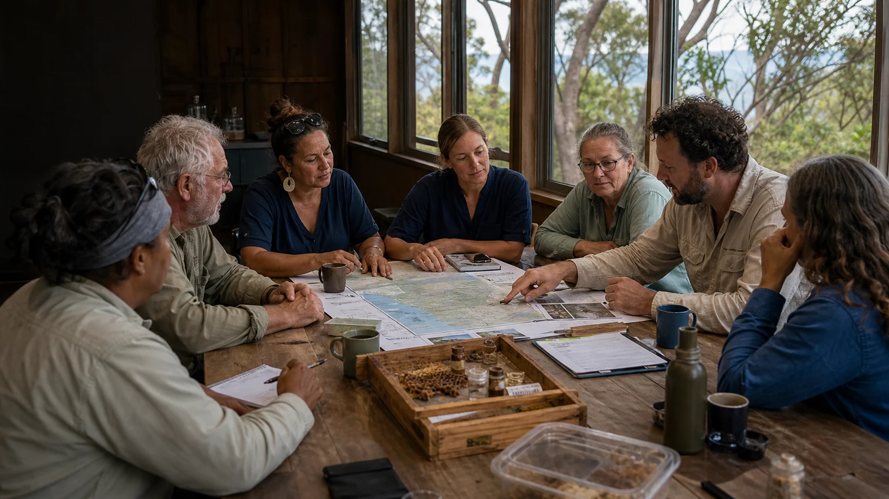

What is being observed?
Local beekeepers are reporting pressure, Queensland is managing varroa risk, and small hive beetle is plausible in warm coastal conditions.

The partner question is not who gets the logo at the top. It is who can make local beekeeper action safer, sharper and better supported while respecting Country, privacy and practical hive knowledge.
Partner pack
A useful partner pack should make the first meeting concrete. It should state the problem, name the island asset, explain the community base, flag governance, show research value and ask for named contributions.
Local beekeepers are reporting pressure, Queensland is managing varroa risk, and small hive beetle is plausible in warm coastal conditions.
MBRS offers a possible physical base for research, teaching and field access on Minjerribah / Straddie.
Beekeepers can provide observations, samples, practice knowledge and field reality when trust and privacy are protected.
Quandamooka / QYAC-aligned governance should be designed early, especially around Country, plants, data and benefit-sharing.
Bee biosecurity, resistant varroa, beetle pressure, community surveillance, native plant chemistry and island ecology all meet here.
One academic lead, one technical contact, one student pathway and one in-kind facility or service contribution.
Governance table
The table should make local knowledge visible and protected. Beekeepers are not just participants; in the best version they are co-researchers, paid for structured data collection when funding allows.
Best partner sequence
The cleanest path is not to invite every institution into the same fog. It is to ask the first partners for narrow, useful contributions.
Could UQ host the physical island bench, training space and safety pathway?
Could SCU help design mite and beetle monitoring, IPM training and beekeeper extension?
Could official and technical advisors keep the lab aligned with reporting, movement, treatment and surveillance rules?